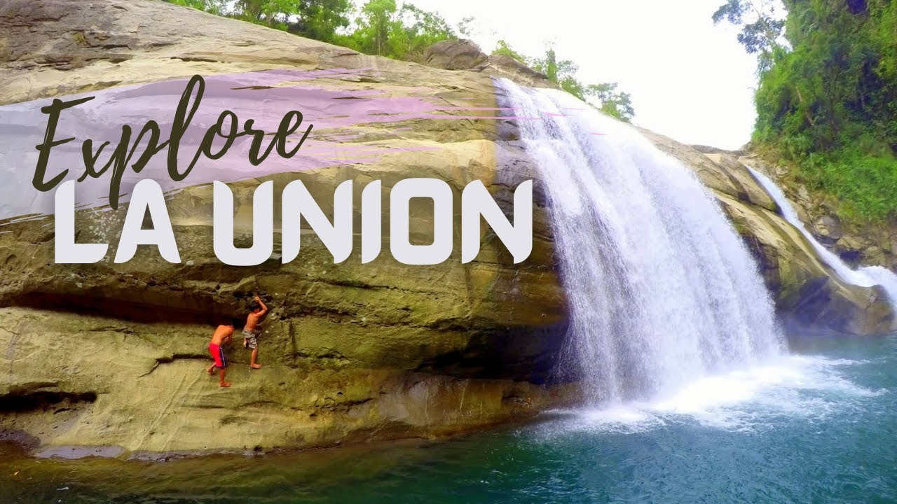

La Union Province
is in the southwestern Ilocos Region in northern Luzon. It is bounded by Ilocos Sur on the north and northeast, Benguet on the east, Pangasinan on the south, and the China Sea on the west.The land_______________________________
La Union has a predominantly hilly terrain which gradually rises eastward from the shore.
The western border is a coastal plain of raised coral and alluvia overlying older sediments.
The province has two pronounced seasons - dry from November to April, and wet from May to October.
A Brief Histor
The province was created on March 2, 1850, out of towns then belonging to Ilcos Sur and Pangasinan.
Luciano Almeda headed the provincial government for the time during the Philippine Revolution, while General Manuel Tinio occupied San Fernando in May 1898. After the battle on November 19, 1899, the American troops took control of the province.
In 1901, a civil government was established in La Union. A year later, La Union ceded a narrow strip of land to Amburayan, which later became a sub-province of the old Mountain Province.
The People
Ilocanos dominate the population. Some Pangasinenses are found in the southern part of the province. A substantial part of Chinese-Filipinos can be found in the province's commercial center.
Ilocano is the predominant language of the people.
Commerce and Industry
The main sources of livelihood are farming and fishing.
The principal products are rice, corn, tobacco, garlic, sugarcane and cassava. Grapes are also grown extensively.
Cottage industries include blanket-weaving, basketry, shellcraft, pottery and furniture-making.
La Union is also well-known for its "basi", the native wine made from fermented sugarcane juice.
Getting There and Away
Buses depart for the province several times daily.
Other Information
Stretches of white and gray-sand beaches can be seen along the towns. Resorts, hotels, and cottages are available along the shores.
The Provincial Capitol is an imposing yellow building built during the American Regime. It sits atop a hill in the capital town overlooking San Fernando Bay.
Museo de La Union showcases archaeological finds in the province.
Museo Iloko houses religious artifacts, antique furniture, porcelain wares and miniature dolls.
Christ on the Mount stands atop a hill along the Marcos Highway overlooking the town of Tubao.
The miraculos image of Our Lady of Charity is enshrined in the Agoo Cathedral. Devotees make a pilgrimage during Holy Week.